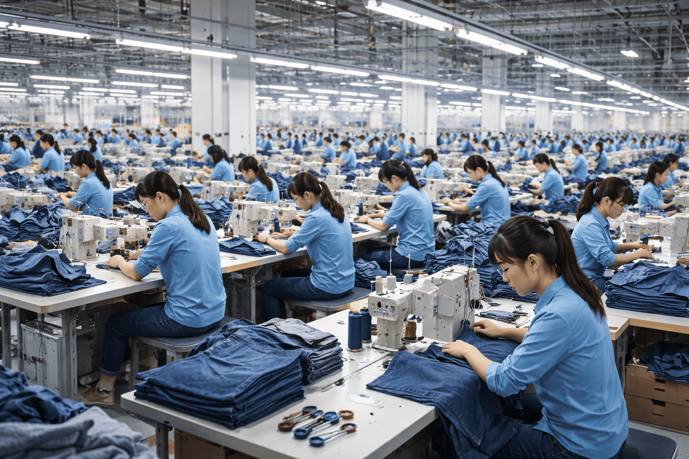
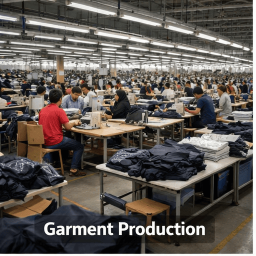
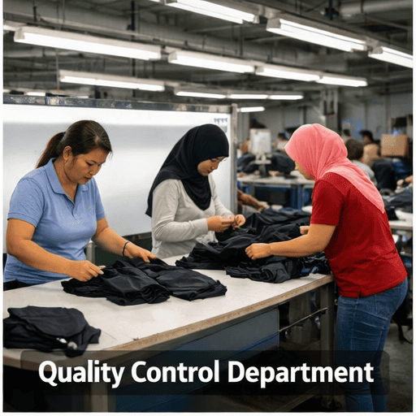
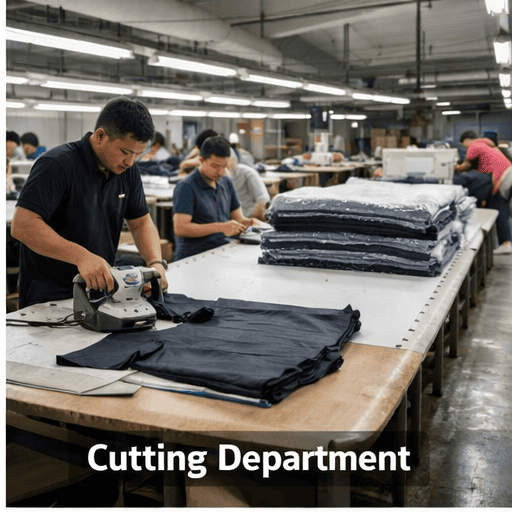
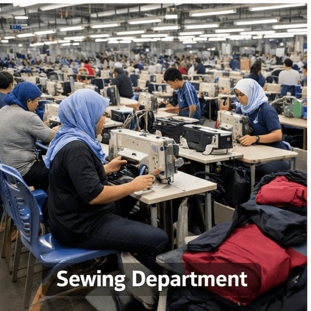
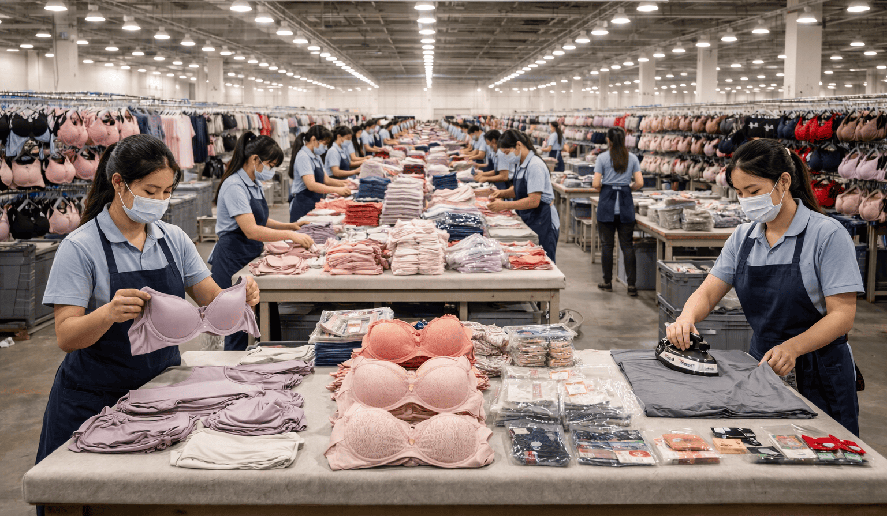

Departments
PT Hoplun Indonesia memiliki berbagai departemen yang bekerja secara terintegrasi untuk mendukung proses produksi garmen yang efisien dan berkualitas. Setiap departemen memiliki peran penting mulai dari perencanaan produksi, pemotongan kain, penjahitan, hingga pengendalian kualitas untuk memastikan setiap produk memenuhi standar perusahaan dan kebutuhan pelanggan global.

Garment Production Department
Departemen produksi garmen yang bertanggung jawab mengelola seluruh proses pembuatan pakaian mulai dari pemotongan kain, penjahitan, hingga proses finishing. Dengan dukungan mesin modern dan tenaga kerja berpengalaman, kami memastikan setiap produk diproduksi dengan standar kualitas tinggi, efisiensi kerja, serta memenuhi kebutuhan pasar global.
Production Monitoring
Pemantauan proses produksi secara menyeluruh untuk memastikan setiap tahapan pembuatan garmen berjalan dengan efisien, tepat waktu, dan sesuai dengan standar kualitas perusahaan.
Quality Testing
Proses pengujian kualitas produk garmen untuk memastikan setiap pakaian memenuhi standar perusahaan sebelum masuk ke tahap finishing dan pengiriman kepada pelanggan.
Quality Inspection
Proses pemeriksaan kualitas produk garmen secara menyeluruh untuk memastikan setiap pakaian memenuhi standar perusahaan sebelum masuk ke tahap finishing dan pengiriman.
Production Planning
Perencanaan proses produksi yang terstruktur untuk memastikan setiap tahap pembuatan garmen berjalan efisien, tepat waktu, dan sesuai dengan standar kualitas perusahaan.

Warehouse & Logistics Department
Departemen gudang dan logistik yang bertanggung jawab mengelola penyimpanan bahan baku, pengaturan stok, serta distribusi produk jadi. Dengan sistem manajemen yang terorganisir, departemen ini memastikan alur bahan dan produk berjalan efisien untuk mendukung kelancaran proses produksi dan pengiriman kepada pelanggan.
Efficient Production
Proses produksi yang efisien dengan penggunaan teknologi modern dan sistem kerja yang terorganisir untuk memastikan kualitas produk tetap tinggi serta waktu produksi lebih optimal.
Advanced Manufacturing
Proses produksi garmen dengan teknologi modern dan metode kerja yang terstandarisasi untuk meningkatkan efisiensi, kualitas produk, serta memenuhi kebutuhan pasar internasional.
Safe Operations
Penerapan standar keselamatan kerja dalam setiap proses produksi untuk memastikan lingkungan kerja yang aman, nyaman, dan efisien bagi seluruh karyawan serta menjaga kelancaran operasional perusahaan.
Operational Support
Dukungan operasional yang memastikan setiap proses produksi berjalan lancar melalui koordinasi tim, pengelolaan sumber daya, serta pemantauan kegiatan produksi secara efektif.

Machine Maintenance Department
Departemen pemeliharaan mesin yang bertanggung jawab memastikan seluruh peralatan produksi berfungsi dengan baik. Melalui perawatan rutin, pemeriksaan teknis, dan perbaikan yang cepat, departemen ini mendukung kelancaran proses produksi serta menjaga efisiensi operasional perusahaan.
Machine Performance
Pemantauan dan pengelolaan kinerja mesin produksi untuk memastikan setiap peralatan bekerja secara optimal, sehingga proses produksi garmen berjalan lancar dan efisien.
Machine Cleaning
Proses pembersihan dan perawatan mesin produksi secara rutin untuk menjaga kebersihan, kinerja optimal, serta memastikan kelancaran proses produksi garmen.
Product Finishing
Tahap penyempurnaan produk garmen yang meliputi pemeriksaan akhir, perapihan, dan penyetrikaan untuk memastikan setiap produk memiliki kualitas terbaik sebelum dikemas dan dikirim ke pelanggan.
Production Optimization
Proses peningkatan efisiensi produksi dengan pengelolaan sumber daya, teknologi modern, dan sistem kerja yang terorganisir untuk memastikan hasil produksi berkualitas tinggi serta memenuhi target produksi perusahaan.

Visual Inspection Department
Departemen yang bertanggung jawab melakukan pemeriksaan visual pada setiap produk garmen untuk memastikan tidak ada cacat, kesalahan jahitan, atau ketidaksesuaian sebelum produk masuk ke tahap finishing dan pengemasan.
Product Inspection
Proses pemeriksaan produk garmen secara menyeluruh untuk memastikan setiap item memenuhi standar kualitas perusahaan sebelum masuk ke tahap finishing dan pengemasan.
Product Imaging
Proses dokumentasi dan pemeriksaan visual produk garmen menggunakan foto atau sistem digital untuk memastikan desain, warna, dan kualitas sesuai standar perusahaan sebelum produk dikirim ke pelanggan.
Precision Cutting
Proses pemotongan kain dengan teknologi mesin modern untuk menghasilkan potongan yang presisi dan sesuai pola. Metode ini memastikan efisiensi bahan, akurasi ukuran, dan kualitas produk tetap tinggi sebelum masuk ke tahap penjahitan.
Production Planning
Perencanaan proses produksi garmen yang terstruktur untuk memastikan setiap tahap berjalan efisien, tepat waktu, dan sesuai dengan standar kualitas perusahaan. Dengan perencanaan yang matang, produksi dapat memenuhi target pasar dan kebutuhan pelanggan secara optimal.

Production Department
Departemen produksi yang bertanggung jawab mengelola seluruh proses pembuatan garmen, mulai dari pemotongan kain, penjahitan, hingga tahap finishing. Dengan dukungan mesin modern dan tenaga kerja berpengalaman, departemen ini memastikan setiap produk diproduksi dengan kualitas tinggi, tepat waktu, dan sesuai standar perusahaan.
Production Monitoring
Proses pemantauan setiap tahap produksi garmen secara menyeluruh untuk memastikan efisiensi kerja, kualitas produk, dan kelancaran operasional departemen produksi.
Production Analysis
Proses analisis data produksi untuk mengevaluasi efisiensi, kualitas, dan performa setiap tahap produksi garmen. Hasil analisis ini membantu perusahaan dalam meningkatkan produktivitas, mengurangi kesalahan, dan memastikan standar kualitas tetap terjaga.
Material Testing
Proses pengujian bahan baku garmen untuk memastikan kualitas kain, ketahanan warna, dan spesifikasi teknis sebelum digunakan dalam produksi. Dengan pengujian yang teliti, setiap bahan memenuhi standar perusahaan dan siap untuk tahap produksi berikutnya.
Preventive Maintenance
Proses perawatan dan pemeriksaan rutin pada mesin dan peralatan produksi untuk mencegah kerusakan, memastikan kinerja optimal, dan menjaga kelancaran seluruh proses produksi garmen.

Garment Production
Layanan produksi garmen yang lengkap dengan dukungan teknologi modern dan tenaga kerja profesional. Setiap proses produksi dilakukan dengan standar kualitas tinggi untuk memastikan produk yang dihasilkan memenuhi kebutuhan pasar dan pelanggan internasional.
Learn More
Quality Control Department
Departemen pengendalian kualitas yang bertanggung jawab memastikan setiap produk garmen memenuhi standar kualitas perusahaan. Melalui proses inspeksi yang teliti pada setiap tahap produksi, kami menjaga konsistensi kualitas sebelum produk masuk ke tahap finishing dan pengiriman.
Learn More
Cutting Department
Departemen pemotongan kain yang bertanggung jawab memastikan setiap bahan dipotong dengan presisi sesuai pola dan standar produksi. Dengan menggunakan mesin modern dan tenaga kerja terampil, proses cutting dilakukan secara efisien untuk mendukung kelancaran tahap produksi berikutnya.
Learn More
Sewing Department
Departemen penjahitan yang bertanggung jawab dalam proses penyatuan setiap bagian kain menjadi produk garmen yang berkualitas. Dengan dukungan mesin jahit modern dan tenaga kerja terampil, setiap produk dibuat dengan rapi, kuat, dan sesuai dengan standar produksi perusahaan.
Learn MoreFinishing Department
Departemen finishing yang bertanggung jawab dalam proses akhir produksi garmen, termasuk penyelesaian detail, pengemasan, dan persiapan pengiriman. Dengan memastikan setiap produk memenuhi standar kualitas akhir, kami menjamin kepuasan pelanggan dan reputasi perusahaan.
Learn More
Packing & Distribution Department
Departemen yang bertanggung jawab atas proses pengemasan dan distribusi produk garmen. Setiap produk dikemas dengan rapi dan aman untuk memastikan kualitas tetap terjaga sebelum dikirim ke pelanggan atau pasar internasional.
Learn More